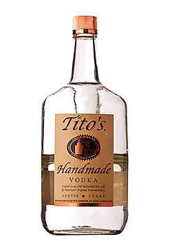
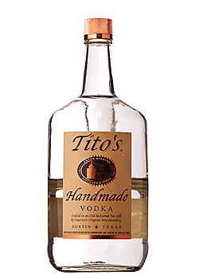

Half Wave Potential (E1/2)
In a CV containing a feature that has a forward and reverse wave, regardless of whether it is reversible or irreversible, E1/2 defines the potential exactly in the middle of the two peaks. For example, if the wave that corresponds to the reduction of X to X– has an Ep = –0.400 V and the wave that corresponds to the oxidation of X– back to X has an Ep = +0.200 V, E1/2 for the X/X– redox couple is –0.100 V. It is important to report these values relative to the specific reference electrode in use, as they are meaningless without it. For a reversible, one electron wave in a CV measured at room temperature, the two Ep’s should be ~60 mV apart, meaning the E1/2 should be ~30 mV positive of the Epc and ~30 mV negative of the Epa.
hover over pic for description
An analyte’s standard potential (E0) is the E1/2 under standard conditions, or 1 M concentration of analyte, 20 or 25 °C (depending on who you ask), and atmospheric pressure. For a given redox couple, the E1/2 is equal to E0 if one assumes that the reduced and oxidized species have the same diffusion coefficients and move at a similar speed through solution. One may hear the E1/2 described as the “standard potential,” the “standard reduction potential,” or the “redox potential,” but the term “redox potential” should be avoided.

 

Did I earn one of these yet?

is licensed under a Creative Commons Attribution-NonCommercial-ShareAlike 4.0 International License.